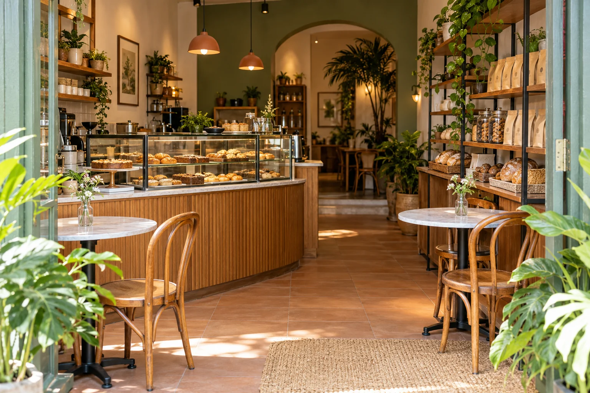
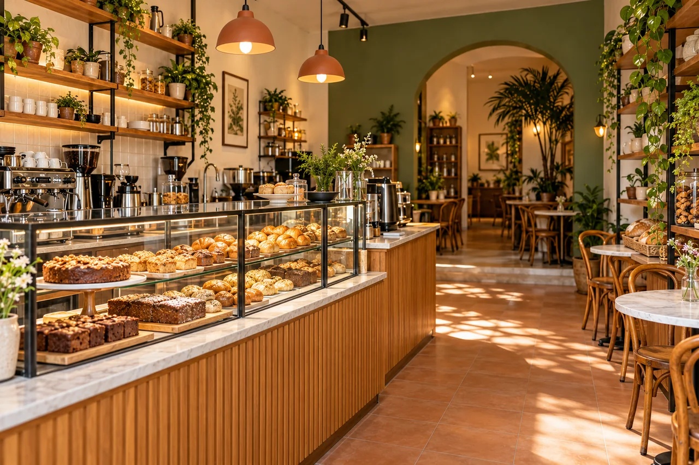
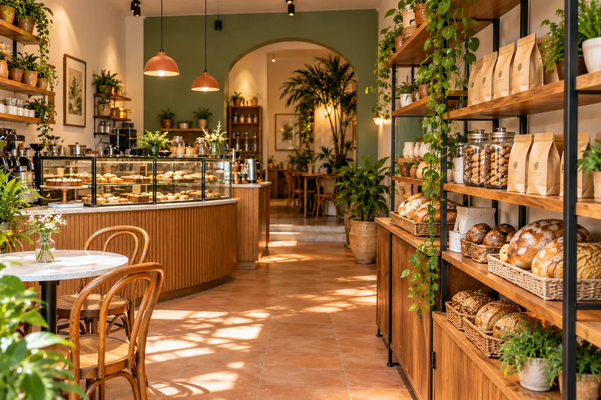
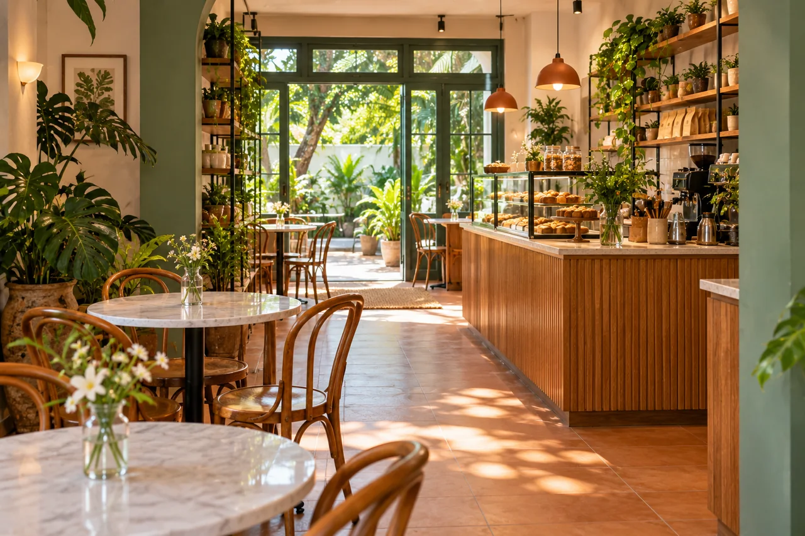

Café de la Esquina
Cafetería · Comercio de ejemplo

Un cafecito. Una buena pausa.
UN CATÁLOGO DIGITAL. NEGOCIOS DE COSTA RICA.
Estamos creando un catálogo digital de comercios físicos de Costa Rica. Un espacio para mostrar tu local, conectar con quienes buscan lo que ofrecés y ayudarlos a llegar hasta tu puerta.
Fecha de lanzamiento: 2027
Cafetería · Comercio de ejemplo

Un cafecito. Una buena pausa.
Ropa y accesorios
Hogar y ferretería
Muestra conceptual · Comercios ficticios e imágenes ilustrativas generadas.
TENÉS UN LOCAL. TENÉS UNA HISTORIA.
Una dirección que cambió. Un teléfono viejo. Fotos que ya no muestran lo que sos. Tu presencia digital debería estar a la altura de tu negocio.
Una página para presentar tu comercio, mostrar lo que ofrecés y reunir tu información en un solo lugar.
Fotos recientes, horarios claros y tus medios de contacto al día. Que te conozcan antes de visitarte.
Queremos conectar tu local con personas que buscan comercios como el tuyo en Costa Rica.
En el barrio, en el centro o dentro de un centro comercial.
Si tenés un local físico en Costa Rica, esto también es para vos.
PARA TU NEGOCIO
Un espacio con tu identidad, tus fotografías y todo lo que tus clientes necesitan para conocerte. Explorá esta muestra e imaginá tu local aquí.
Contemporáneo: portada fotográfica y navegación clara.
CAFÉ DE LA ESQUINA
Café, algo recién horneado y una pausa que se disfruta.
Conocé lo que ofrecemosUn pequeño lugar.
Muchas buenas razones para entrar.
RECORRÉ NUESTRO ESPACIO
De la entrada al mostrador, de los estantes a tu próxima mesa. Conocé el local, paso a paso.



1 / 4 · La entrada
Deslizá las fotos o usá las flechas para recorrer el local.
LO QUE ENCONTRÁS AQUÍ
Para empezar el día o acompañar una buena conversación.
Pan y repostería para darle algo rico a tu pausa.
Opciones para disfrutar con quienes te acompañan.
LA EXPERIENCIA CONTINÚA AQUÍ
Encontrá nuestra ubicación, consultá los horarios y ponete en contacto antes de venir.
Costa Rica · Comercio de ejemplo
Consultá nuestros horarios de atención.
Seguimos la conversación por nuestros canales.
Diseño conceptual. Comercio ficticio e imágenes ilustrativas. La página pública se administra desde un espacio separado.
Una presentación que podrás adaptar a la identidad de tu comercio.
Actualizá tus fotografías, horarios y medios de contacto.
Administrá tu contenido y revisá cómo se verá tu página.
ENCONTRÁ LO QUE NECESITÁS
Lo que buscás puede estar más cerca de lo que imaginás. Descubrí qué comercios de Costa Rica ofrecen el producto o servicio que necesitás y encontrá cómo llegar.
Descubrí dónde encontrar eso que necesitás.
Ropa y accesorios
Una mirada al espacio y a lo que ofrece, antes de visitarlo.
Tené a mano la ubicación para dar el siguiente paso: ir al local.
De encontrarlo
a cruzar su puerta.
Recorrido conceptual · Estilo Local es un comercio ficticio. Las imágenes y la ruta son ilustrativas.
ESTO APENAS ESTÁ EMPEZANDO
Estamos construyendo CRvende para todo el país. En el camino iremos compartiendo pequeños adelantos de lo que viene.
ANTES DE EMPEZAR
Para comercios físicos de Costa Rica que quieren que su presencia en internet esté a la altura de lo que ofrecen. CRvende le dará a cada negocio un espacio web con identidad propia, donde sus clientes podrán conocer el local, descubrir su oferta y encontrar la información que necesitan para visitarlo.
La propuesta es nacional: San José, Alajuela, Cartago, Heredia, Guanacaste, Puntarenas y Limón.
Podrás encontrar sus medios de contacto y redes en su espacio de CRvende, para conversar directamente con el negocio.
No. El registro de interés es un paso previo, sin pago ni compromiso de contratar. Los planes de suscripción, precios y condiciones se comunicarán antes de abrir las inscripciones.
TU NEGOCIO PUEDE SER PARTE
Dejá tu interés en ser parte de CRvende. Cuando abramos el registro, queremos que los comercios de aquí sean los primeros en enterarse.